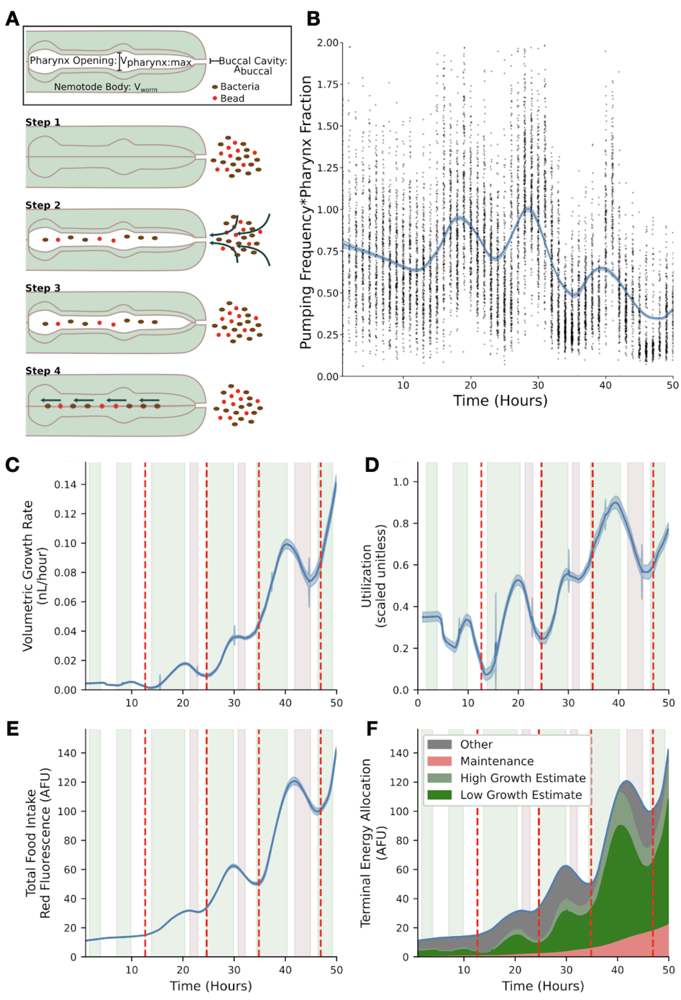

B. Food allocation during C. elegans growth
Mechanical control of feeding and allocation of food energy likely constrain growth dynamics in C. elegans
Sasha Shirman, Joy Nyaanga, Erik C. Andersen, and Niall M. Mangan

Figure B-1: Visualization and analysis of food intake and utilization models. (A) A single cycle in which animals take up and transport food to the gut consists of four general steps. The cycle begins with relaxed pharyngeal muscles and a closed pharyngeal lumen (step 1). The animal opens the pharyngeal lumen so that fluid and food flow through the buccal cavity and into the pharyngeal lumen (step 2). The animal relaxes the muscles that control the opening, stopping the flow of fluid through the buccal cavity and trapping a volume of media approximately equal to the maximum volume of the pharyngeal lumen (step 3). Finally, the pharynx closes, extruding excess media and trapping bacteria and beads that are then ‘swallowed’ (step 4). (B) Product of pumping frequency and pharyngeal lumen fraction. (C) Dynamics of volume growth rate. (D) Dynamics of the estimated food utilization towards growth. (E) Dynamics of red fluorescence. (F) Dynamics of food allocation breakdown. Food allocated toward maintenance is proportional to animal size (pink). Food allocated toward growth is calculated from food intake (C) and utilization (D) to produce low (dark green) and high (combined green) estimates. Food allocated to other metabolic processes consists of remaining food resources (grey). In panels C-E, the solid blue line represents the mean bootstrap regression. Standard deviation on the regression is marked by the shaded blue region. In panels C-F, Vertical red lines mark molt times. Errors on shaded regions are +/- 0.7 hours. These data are from replicate 2 and are representative of all replicates.
Description
We have previously shown that changes in physical properties of the C. elegans cuticle might serve as a cue for developmental timing (Nyaanga et al. 2021). C. elegans must have mechanisms to control growth throughout development, particularly in response to these cues. Like most species, C. elegans do not increase their growth rate indefinitely in response to increased food availability (Uppaluri and Brangwynne 2015). The animals could control growth entirely using feeding rate, as they actively control the feeding rate (Fang-Yen et al. 2009) and stop feeding at the initiation of a molt (Singh and Sulston 1978). In addition to this mechanical control, they could use metabolic control to preemptively divert ingested resources toward or away from growth. Metabolic processing of stored resources could be especially useful if animals complete their molt and enter a food-limited environment. Using a quantitative feeding model, we examine the C. elegans growth data (Nyaanga et al. 2021) to investigate the possible mechanical control of feeding and the metabolic control of the allocation of ingested food toward organismal growth and development.
C. elegans is a filter feeder that pumps its food through a cycle of pharyngeal muscle contractions and relaxations that alternatively open and close the pharyngeal cavity. C. elegans are capable of actively modulating the length of time used to contract or open a subset of the pharyngeal muscles (Fang-Yen et al. 2009). Our feeding model describes how control of this time length and thus the control of the overall pumping period, defined as the length of time of one full pumping cycle, translates to changes in the rate of food uptake (Figure B-1A). The results of our analysis show both an oscillation in pumping rates and a slow change in pharyngeal lumen size throughout development (Figure B-1B). The minima of the product of pumping frequency and pharynx fraction occurred during molt times, consistent with prior knowledge (Singh and Sulston 1978; Byerly et al. 1976). The relative length of the pharynx to animal length has been shown to decrease over development (Avery 2003) and a similar trend in the volume of the pharyngeal lumen could explain the slow decrease in the product of pumping frequency and pharynx fraction.
To understand whether animals control growth rate primarily using the mechanical feeding process or metabolic regulation, we describe how food is utilized once it is ingested by C. elegans. We assumed three general categories of food utilization: maintenance, observed volumetric growth, and all other processes. We assume that resources required for maintenance are proportional to the volume of the animal. Other processes may include the development of tissues and structures, such as reproductive components, within the worm which are resource intensive, but are not detected during the measurements of the width, length, or volume. Food intake rate (using red fluorescence as a proxy) and volume growth rate (numerically differentiated from the volume regression) follow similar dynamics throughout much of C. elegans development (Figure B-1C and Figure B-1E). Each larval stage consists of three types of dynamics: steady growth during which food intake and growth rate are both increasing (green), preparation for molt during which food intake and growth rate are both decreasing (red), and transition regions where food intake and growth rate do not vary together (white). During steady growth and molt initiation, mechanical food intake rate and allocation of food resources towards observable growth have similar dynamics. At transition points the allocation of food resources towards growth, reaches a local minimum or maximum. These local extrema in food utilization at transition points likely indicate large changes in metabolic regulation (Figure B-1D).
Our analysis of the relationship between growth rate and food intake rate quantified the interplay of metabolic regulation and mechanical food intake (Figure B-1F). Mechanical food intake provides the upper bound of available food resources for growth, but metabolic regulation substantially changes how much of this available food is utilized for volumetric growth across development. Local extrema in metabolic regulation dynamics coincide with the start of transition times. Within the L2 and L3 stages we observed a decoupling between growth rate and food intake dynamics (Figure B-1F white region) twice. The first of these time periods corresponds to the times at which the width-to-length ratio drastically changes and the second corresponds to ecdysis. We estimated that throughout larval stages metabolic resources allocated to non-growth processes varies much less than food resources required for growth and maintenance. The oscillatory behavior of food utilization motivates the need for further metabolomic experiments to probe metabolic regulatory dynamics particularly in around larval-stage transitions.
Methods
Worm culture
The canonical laboratory strain N2 was obtained from the C. elegans Natural Diversity Resource (Cook et al. 2016) and animals were cultured at 20C on 6 cm plates of modified nematode growth media (NGMA), which contained 1% agar and 0.7% agarose seeded with E. coli OP50 bacteria.
High-throughput growth assay
Measurements of body size and fluorescence were measured as previously described (Nyaanga et al. 2022). Briefly, strains were propagated for three generations, bleach-synchronized, and titered at a concentration of 1 embryo per \(\mu L\) into six replicate 500 mL flasks. The following day, arrested L1s were fed HB101 food at a final concentration of OD20 in a final flask volume of 100 mL K medium and HB101 food. Animals were allowed to grow at 20C with constant shaking. Flasks were sampled each hour beginning one hour after feeding and continuing for 72 consecutive hours. At each hour, 500 \(\mu L\) was removed from each flask and incubated with fluorescent polychromatic beads (Polysciences, 19507-5) for 10 minutes with shaking. Following the bead incubation, animals were aliquoted to a 96-well microtiter plate, treated with sodium azide, imaged with an ImageXpress Nano (Molecular Devices, SanJose, CA), and scored using a large-particle flow cytometer (COPAS BIOSORT, Union Biometrica, Holliston MA). COPAS BIOSORT was used to collect measurements of animal length (TOF), optical extinction (EXT), and red fluorescence for every animal in each well.
Feeding model analysis
To analyze volumetric growth dynamics and feeding dynamics, volume regression was calculated using a cylindrical approximation for animal shape and the same local kernel regression previously described (Nyaanga et al. 2021) was applied to red fluorescence data. Volume growth rate was calculated using the python numpy gradient function applied to the volume regressions. An additional moving time window average (1.4 hours) was applied to smooth numerical errors in the derivative when determining feeding and growth regime transition points. Model derivations can be found in the Extended Data file.
Contributions
Sasha Shirman: Methodology, Formal Analysis, Visualization
Joy Nyaanga: Investigation, Data curation, Writing - original draft
Erik C. Andersen and Niall M. Mangan: Conceptualization, Funding acquisition, Supervision
References
Nyaanga J, Goss C, Zhang G, Ahmed HN, Andersen EJ, Miller IR, Rozenich JK, Swarthout IL, Vaughn JA, Mangan NM, Shirman S, Andersen EC. Changes in body shape implicate cuticle stretch in C. elegans growth control. bioRxiv. 2022. p. 2021.04.01.438121. Available from: https://www.biorxiv.org/content/10.1101/2021.04.01.438121v3
Uppaluri S, Brangwynne CP. A size threshold governs Caenorhabditis elegans developmental progression. Proc Biol Sci. 2015 Aug 22;282(1813):20151283. Available from: http://dx.doi.org/10.1098/rspb.2015.1283 PMCID: PMC4632629
Fang-Yen C, Avery L, Samuel ADT. Two size-selective mechanisms specifically trap bacteria-sized food particles in Caenorhabditis elegans. Proc Natl Acad Sci U S A. 2009 Nov 24;106(47):20093–20096. Available from: http://dx.doi.org/10.1073/pnas.0904036106 PMCID: PMC2785297
Singh RN, Sulston JE. Some Observations On Moulting in Caenorhabditis Elegans. Nematologica. Brill; 1978 Jan 1;24(1):63–71. Available from: https://brill.com/view/journals/nema/24/1/article-p63_7.xml
Byerly L, Cassada RC, Russell RL. The life cycle of the nematode Caenorhabditis elegans. I. Wild-type growth and reproduction. Dev Biol. 1976 Jul 1;51(1):23–33. Available from: http://dx.doi.org/10.1016/0012-1606(76)90119-6 PMID: 988845
Avery L. Food transport in the C. elegans pharynx. Journal of Experimental Biology. 2003. p. 2441–2457. Available from: http://dx.doi.org/10.1242/jeb.00433
Cook DE, Zdraljevic S, Roberts JP, Andersen EC. CeNDR, the Caenorhabditis elegans natural diversity resource. Nucleic Acids Res [Internet]. 2017 Jan 4;45(D1):D650–D657. Available from: http://dx.doi.org/10.1093/nar/gkw893 PMCID: PMC5210618